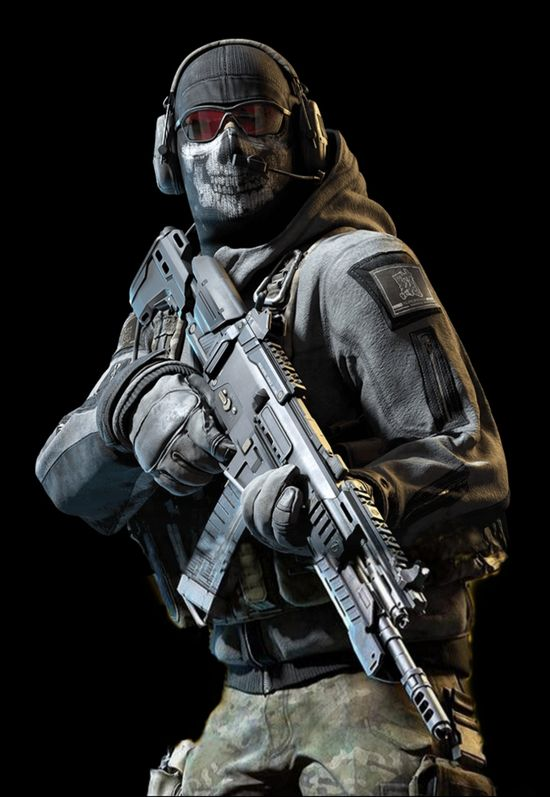

Imagem do Jogo Call of Duty

Tema:A história Do Call of Duty
O primeiro título da série foi lançado em 2003 exclusivamente para computadores. Mais tarde a série se expandiu para os mais variados sistemas,
consoles, portáteis e smartphones. Os três primeiros títulos da série se concentram em jogos ambientados na Segunda Guerra Mundial, apresentando
batalhas e acontecimentos históricos daquele período. Com o tempo, a série viu jogos ambientados na Guerra Fria,
em tempos atuais, mundos futuristas até o espaço sideral. O título mais recente, Call of Duty: Warzone 2.0, foi lançado em 16 de novembro de 2022.
Os jogos da série Call of Duty são publicados pela Activision. Enquanto que o estúdio Infinity Ward ainda é o principal produtor, a Treyarch
também já produziu alguns títulos onde a história está interligada entre eles. Alguns jogos já foram produzidos pela Gray Matter Interactive,
Nokia, Exakt Entertainment, Spark Unlimited, Amaze Entertainment, n-Space, Aspyr, Rebellion Developments, Ideaworks Game Studio, Sledgehammer
Games, Raven Software e nStigate Games.
Em janeiro de 2016, já tinham sido vendidas mais de 250 milhões de cópias de jogos Call of Duty.[1] Em particular, Call of Duty: Black Ops
foi o jogo mais vendido da série, com um total de 30.5 milhões de cópias vendidas,[2] sendo superado pelo reboot de 2019, Call of Duty:
Modern Warfare.[3] De acordo com a Activision, as vendas dos jogos Call of Duty já ultrapassaram os US$15 bilhões.[4] Em abril de 2021, a série já havia vendido mais de 400 milhões de cópias.[5] Os primeiros jogos da série foram lançados com aclamação universal, com elogios em maior parte direcionados a história, enredo, e o seu modo multijogador estabelecido, mas vários dos títulos recentes receberam críticas mistas, com elogios a evolução da jogabilidade e gráficos da série, enquanto que algumas críticas foram direcionadas a sua repetitividade anual.
Fonte:Wikipédia , Data de publicagem 26/09/2023 , Aluno:Daniel Eustáquio Narciso.